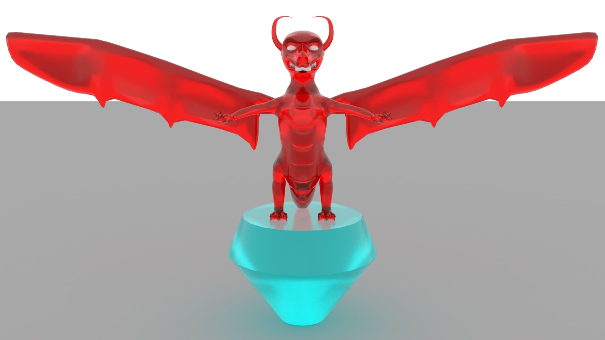
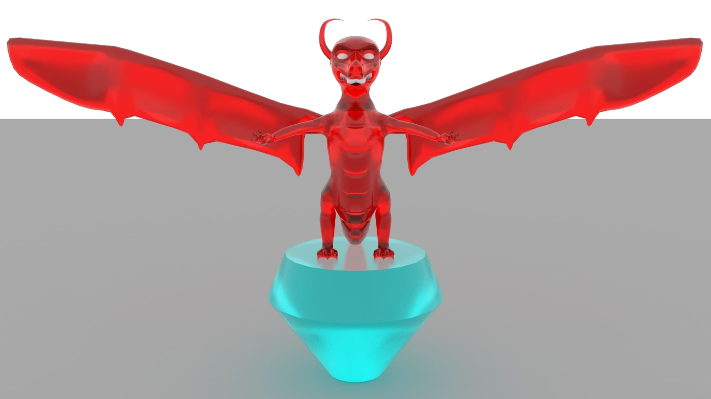

Dragon
Este es un ejercicio de modelado organico donde se realizo el modelado y texturizado de un dragon de vidrio. Para realizar este modelado se hizo uso de la herramienta "Autodesk Maya" y se realizo el render con el motor "Arnold" para mayor realismo en el efecto de vidrio que se le deseaba dar al modelo. A continuación, se presenta los diferentes renders que se realizaron.


 
